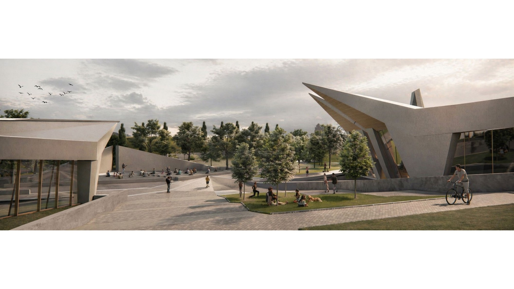
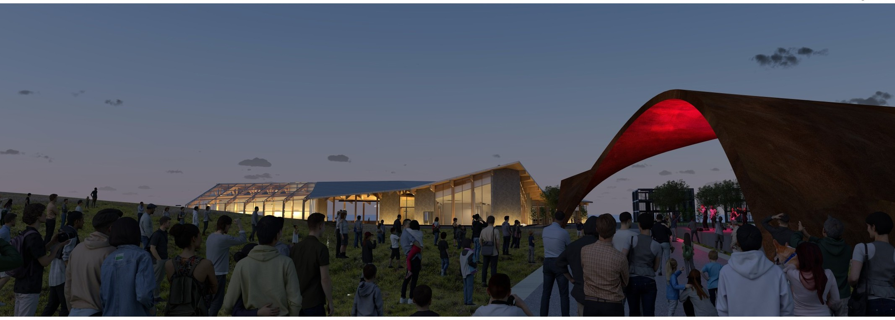

AI post-production
+ diagrams
Image studies, visual refinements, and diagrams that communicate how a project comes together.
01 / Architecture student · University of Arkansas
I’m Penn Smith — a designer and maker interested in the ways thoughtful architecture can bring people, material, and landscape together.
Explore selected work
Architecture + objects + design-build
From civic learning spaces to hands-on fabrication, each project begins with close attention to its context.
03 / About me

I’m a Bachelor of Architecture student at the University of Arkansas School of Architecture and Design, graduating in 2027.
I believe architecture carries a responsibility to improve the built environment for future generations. My work explores how careful observation, clear ideas, and hands-on testing can lead to spaces that feel generous and connected to their surroundings.
At the University of Arkansas Laser and Model Lab, I help students bring ideas into the world through laser cutting, shop tools, and 3D printing. I’m happiest learning alongside others — in the studio, in the shop, or outside with a sketchbook.
Tools & practice
Outside the studio Hiking · Kayaking · Fishing · Writing
04 / Beyond the studio
A place for the experiments, milestones, and conversations that shape the work around the projects.
Image studies, visual refinements, and diagrams that communicate how a project comes together.
Competition entries, juried recognition, and awards.
Lectures, talks, and events that inform the way I think about architecture and design.
05 / Resume
Architecture, fabrication, and community-focused design.
Fay Jones School of Architecture and Design
Help students turn design concepts into built work, and maintain and calibrate laser cutters, 3D printers, CNC machines, vacuum-forming equipment, and other shop tools.
Fay Jones School of Architecture and Design
Support CNC processes, maintain the shop, and assist design studios with fabrication needs.
Starbucks · Dallas, Texas
Prepared handcrafted beverages and provided personalized service for 400+ customers daily in a high-volume café.
Fay Jones School of Architecture and Design
Bachelor of Architecture · Expected 2027
Bonton Farms · Heart House · For the Love of the Lake · Special Olympics · Hunger Busters · Boys & Girls Club · Juliette Fowler
06 / Get in touch